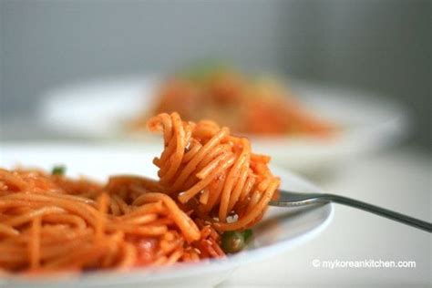

Kimchi Spaghetti

Ingredients:
-
500 g pasta, spaghetti
-
160 g kimchi, chopped
-
80 g onion, small dice
-
400 g bacon, chopped
-
120 g mushrooms, sliced
-
40 g butter
-
2 tbsp soy sauce
-
2 tbsp gochujang
-
1/2 cup mozzarella cheese, shredded
-
1 tbsp sesame seeds, toasted
-
1/2 cup green onion, sliced thin
Instructions:
- Cook spaghetti according to package directions. Set aside.
- Heat pan with butter and saute the mushrooms. Once cooked, remove and put them on a plate.
- Add in the bacon and stir until cooked. Add in the onion and cook until both are crispy. Remove from pan onto separate plate.
- Add in kimchi and stir until cooked. Once cooked, add in the mushrooms and mix together for 30 seconds. Reduce heat to medium low.
- Add spaghetti to pan and mix with the bacon, soy sauce, and gochujang. Add remaining ingredients and mix well. Cook until heated through.
- Plate and garnish with the cheese, sesame seeds, and green onion.
Back to Recipes